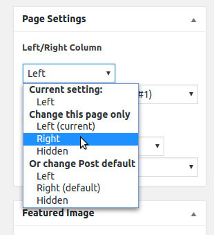

- Name: Summer Blog
- Version: 1.0.15
- Author: dtbaker
- Created: 2016-09-12
- Last Updated: 2017-06-13
- Tested With: WordPress 4.8
- Download: Click Here
- Online Demo: Click Here
Live Backend Demo
Do you need to test out a theme feature in the admin backend? Need to see how the installer works before running it on your own website? Feel free to test everything here:

Theme Installation
Please watch this instructional video showing how to install this WordPress theme and setup default content:
Below are the step by step instructions:
- Purchase the theme from ThemeForest.net
- After purchasing go to your Downloads page ( http://themeforest.net/downloads )
- Click on the Download button and choose the Installable WordPress file option and save this ZIP file to your desktop.
- Login to WordPress Dashboard.
- Go to Appearance > Themes > Install Themes
- Click the Upload tab
- Choose the downloaded ZIP file from your desktop and click upload
- Choose the ‘Activate’ option after upload
- Follow the Setup Wizard prompts (see video for example)
- (if you need to run the setup wizard again please go to Appearance > Setup Wizard)
Here is a screenshot showing step by step instructions for downloading and installing the WordPress theme:
{kind=link}
Elementor Page Builder
This theme uses the Elementor page builder. Elementor is a very powerful and very good WordPress page builder. Using Elementor will help you design amazing looking pages very quickly and easily.
Help with the Elementor page builder:
- Read the documentation available here: https://docs.elementor.com/
- Watch the Videos on Youtube here: https://www.youtube.com/channel/UCt9kG_EDX8zwGSC1-ycJJVA
- Stay up to date on the latest new features via Facebook here: https://www.facebook.com/elemntor/
Upgrading to Elementor Pro
This theme comes with the Free version of Elementor. It is already extremely powerful, but you can take it to the next level by purchasing the 3rd party Pro version. For a small extra fee you get access to great new features such as: Form Builders, Slides, Portfolio, Global Widgets, Custom CSS, Pro Pre-Made Templates, WooCommerce addons, Flip Box, Masonry Layout, Share Buttons and much more.

To find out more and to purchase Elementor Pro please click here: https://elementor.com/
Quick Reference Guide
We've created this quick reference guide to show you all the theme-specific features. Keep this handy while starting out.
(click to view larger)
Front End Quick Access Guide:
Back End Dashboard Quick Access Guide:
Customizing Fonts
Font Customization can be done easily in three parts of the website.
1. Go to Appearance > Customize menu. Click "Typography" then "Default Typography". Here you can change the "Logo", "Widget Headings" and default "Paragraph" font styles. You can control font style, colors, paddings, margins and sizes. Here is a screenshot of the font customization options.
2. Go go Pages and click the "Edit with Elementor" option against the page you wish to edit. Click the 3-line (hamburger) menu button at the top left of the page. Then click "Global Fonts". This lets you pick the global Header, Body and Accent Text fonts. Here is a screenshot of those settings:
3. Go go Pages and click the "Edit with Elementor" option against the page you wish to edit. Click on the page element you wish to edit (e.g. a text block) and then click the Style option. Here you can change the "Typography" drop down from Default to Custom. Now you can set the font color, size, family, weight, transorm, style, line height and event letter spacing. Here is a screenshot of those settings:
Advanced Customization: if you need assistance with advanced customizations then please hire someone from Envato Studio (look in the WordPress category)
Create a photo gallery or simple image slider
Here are instructions on creating the photo gallery:
- Create a new page in WordPress
- Click "Edit with Elementor"
- Drag the "Image Gallery" element over onto the page area
- Click the "Add Images" button and select your images
- Click the "Save" button
- Your gallery should now be live
Here are instructions on creating an image slider:
- Create a new page in WordPress
- Click "Edit with Elementor"
- Drag the "Image Carousel" element over onto the page area
- Click the "Add Images" button and select your images
- Change the image slider settings
- Click the "Save" button
- Your slider should now be live
Setup the Contact Page
- Make sure the Contact Form 7 plugin is installed
- Login as admin and choose “Contacts” menu on the left.
- Open the default “Contact Form 1” and make any changes as neccessary.
- Copy the shortcode (it will look something like [[contact-form-7 title=”Contact form 1″]] )
- Create a new page called “Contact”, type the words “Please fill in the form below to contact us” and paste in the shortcode from before.
- Save the page and check the contact form works (ie: do you receive an email from it?)
- Click edit page again and add a map using the google map shortcode (more details below under shortcode)
IMPORTANT: If you have imported demo content please change your email address. Go to Contact > Contact Forms then open up each form and set the correct email address in the "Mail" tab.
Setup the Main Menu
(not required if you have setup default content as above)
Go to Appearance > Menu and follow the
standard WordPress menu creation process.
Detailed instructions on creating a menu are located on the WordPress
website here: http://codex.wordpress.org/WordPress_Menu_User_Guide
Background Images / Colors
Changing the website background image is easy. Simply go to Appearance > Customize > Background Image. Here you can select a background image and choose various options such as size, position and time. Here is a screenshot of the background image window:
Changing the website background color is easy. Simply go to Appearance > Customize > Colors. Here you can select the Header Text color and the Background Color. Here is a screenshot of the background color options: (note: to change the top logo font color you may need to go to Apperance > Customize > Typography > Default > Logo).
Columns
Creating columns is really easy with Elementor. Go to the page you wish to edit and click the "Edit with Elementor" button. Click the column icon and click the + icon to create a new column. Here is a video showing how it works:
Included Widgets
-
Insert Page Content:
This lets you design a page using Elementor and then insert it as a widget somewhere else. You can publish set the page as "Private" and still include it in the widget. Here is a screenshot of the widget settings. This widget is used in the demo sidebar to create the "About" widget with the text and image next to each other.

-
Social Icons
This widget lets you create a series of social icons for use in a sidebar or the footer of the website.
Site Color
This theme comes in two color options. A "Light" and a "Dark" color style. The easiest way to set the color style is to choose it during the initial theme setup wizard. This will import the correct default content for your chosen color style. You can change the color style at a later stage ( Appearance > Customize > Site Color ) however some of the default content will not look good unless you re-install the theme on a new empty wordpress site.Header Images
You can change the Header Image from the Appearance > Customize > Header Image area.
There are some pre-set heaer images, but you can also upload your own images.
Page Title
This is a page with a “Normal” title. It is not “Floating” in the center like the other pages.
It is very easy to change the page title style, simply go to the page you wish to change, click Edit Page, and change the style in the sidebar meta area:
You can also change the overall default header style from the Theme Customize area. Just go to Appearance > Customize > Page Style and choose the defaults there.
These defaults will apply to all pages, and you can change it on a per-page basis as above.
Page Border
It is very easy to change the page border style, simply go to the page you wish to change, click Edit Page, and change the style in the sidebar meta area: You can also change the overall default top border style from the Theme Customize area. Just go to Appearance > Customize > Page Style and choose the defaults there. These defaults will apply to all pages, and you can change it on a per-page basis as above. An example of page border is available here: http://summer-day.dtbaker.net/pages/top-border/Widgets Positions / Sidebars
It is very easy to change the position of the sidebar on every page of the website.
You can change it in the header “admin bar” while you are viewing the page:
Or you can change it on the “edit page” metabox area here:
The Widgets and Sidebars in this theme are handled by the Widget Area Manager plugin. This plugin should be installed automatically, but can be installed manually from that website if needed.
You can easily change the sidebar and footer on any page of this website.
Google Map
Google Map API Key
First you need to set an API key, so your Google Maps will work correctly on your website. Follow these steps:
- Go to https://developers.google.com/maps/documentation/javascript/get-api-key
- Scroll down and click the "Get a Key" button:
- Login with your Google Account if you are prompted (you might have to click "Get a Key" again after this)
- Enter a new project name into the box and agree to the terms:
- Click "Create and Enable API" to view your API key:
- Copy your API key into the theme settings area ( Appearance > Customize > Google Map ):
Adding a Google Map with Elementor.
- Go to the page you wish to add the Google Map to (e.g. Contact Page)
- Click Edit with Elementor
- On the left search for the "Map" element. Choose the second one with the "W" logo:
- Drag this element onto your page and then configure the settings:
Adding a Google Map to a widget area (sidebar/footer).
- Go to Appearance > Widgets
- Drag the "Google Map" widget into a Widget Area.
- Set the Google Map settings in the widget and press Save
Insert Page Content
This theme comes with a handy "Insert Page" feature. This allows you to insert one page into another page or widget.
This feature allows you to create re-usable parts for your website. For example; create a "Pricing Table" that you can insert onto multiple pages. This way you can only make a single change and it will update on all the pages automatically.
Insert Page Content into Widget/Sidebar
- Create a new normal WordPress page
- Insert/design your sidebar content on the page (e.g. add images and text, or create columns with Elementor)
- Save and publish this page (optionally you can make this page private)
- Go to Appearance > Widgets and drag "Insert Page Content" into a widget area.
- Choose your page from the drop down list and it will insert the contents here
Insert Page Content into another Page using Elementor
- Create a new WordPress page
- Click Edit with Elementor
- Drag the "Onsert Page Content" widget onto your page
- Choose your page from the drop down list and press save
Updating
Please follow this exact process when updating the theme
- Go to the Envato Market menu in the WordPress backend (install the plugin if not there already)
- Click settings tab
- Click the "login with oAuth" button down the bottom (if you do not see this button, stop here and follow the "get a token" instructions on the Envato settings page)
- Approve the update permissions
- Go to Appearance > Themes and click "Update" button for your theme
- Click Dashboard menu
- If you see a notice at the top of the page, click the "Begin Updating Plugins" menu button and follow the prompts
NOTICE: If the above process doesn't work, or you get a Download package not available message, please download the dtbaker-updater.zip plugin and install it to your WordPress site (Plugins > Add New > Upload). Then try the above update process.
A video showing this process is available below:
Translations
Please try installing the free plugin called Loco Translate. Once installed go to the Loco Translate menu, then choose Themes, then choose the theme, then click "New Language" and follow the prompts.
Alternatively, the WordPress POT file for this theme is available in the /languages/ folder of the theme zip file. Instructions on translating WordPress themes with POT file are available here: https://poedit.net/wordpress
Photoshop Files
Photoshop files are available from this special URL after purchasing this theme: http://dtbaker.net/files/envato/resources/. Please login with your Envato account to access the latest version of the purchased resources.Advanced Editing
Please consider using a Child Theme for any changes. This will help stop theme updates overwriting your customisations.
- CSS Files:
- A good way to override default theme CSS is to install a WordPress CSS plugin such as this one. This is a little easier than overwriting theme stylesheets for small changes.
- style.css - this is the main stylesheet for the website. It is fully commented with a table of contents at the top for ease of access
- style.less - this is the LESS stylesheet, if you want to use LESS to edit the styles you can. This file was used to generate style.css
- The styles are split into sections and include comments.
- By default the minified stylesheet will be included to speed up the website process. To disable this feature please edit the main theme.json file and change 'minify-stylesheets' from true to false
- We always recommend hiring a professional website editor from Envato Studio to assist with changes.
Changelog
Here is a list of theme changes:
-
Version: 1.0.15
Date: 2017-06-13
- WordPress Updates
- Elementor page builder update
-
Version: 1.0.14
Date: 2017-04-24
- WordPress Updates
- WooCommerce fix
-
Version: 1.0.13
Date: 2017-04-05
- WordPress Updates
- Blog button fix
-
Version: 1.0.12
Date: 2017-02-28
- CSS Fix
-
Version: 1.0.11
Date: 2017-02-27
- Update to support new version of WordPress and Elementor
-
Version: 1.0.10
Date: 2016-10-12
- Update to support new version of Elementor
-
Version: 1.0.9
Date: 2016-10-10
- Update to support new version of Elementor
-
Version: 1.0.8
Date: 2016-10-04
- Fix banner image thumbnails
-
Version: 1.0.7
Date: 2016-10-04
- Initial Release